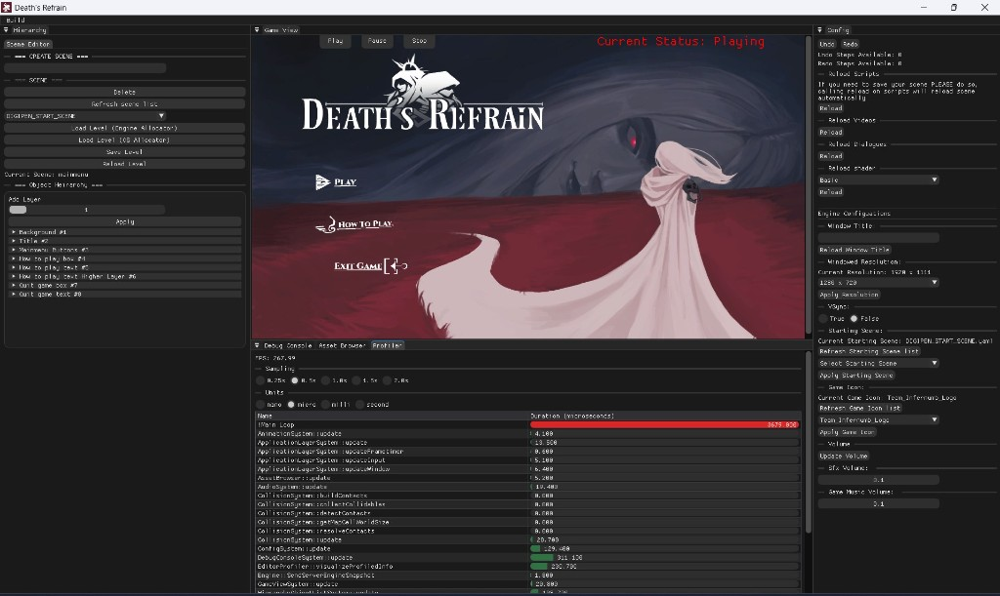
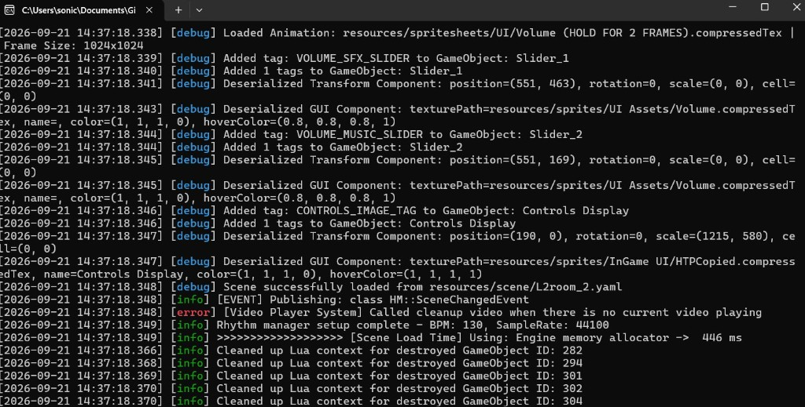
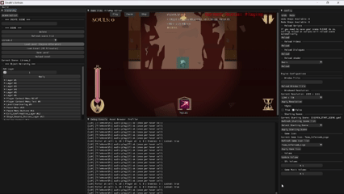
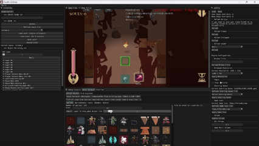
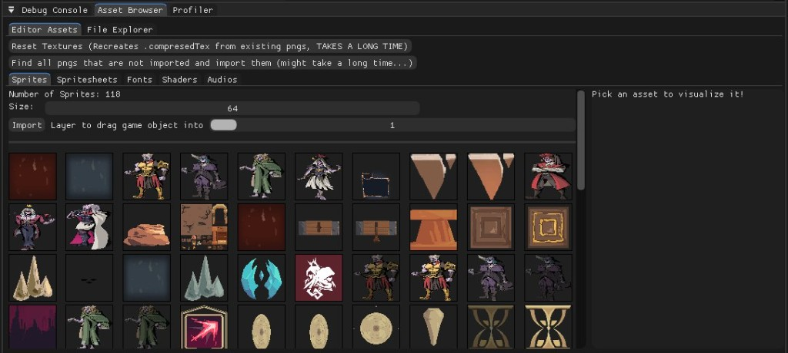

Custom C++ engine behind Death's Refrain. I built the tooling the team watched the engine through.
Hellmaker is the in-house engine that runs Death's Refrain. They are one Year 2 project across two pages, split by what I did: this is the engine and the editor tooling, that one is the game. Technical Lead was Loh Boon Cheong, Timothy. I owned the shared debug layer and the editor tooling — the console, the GUI manager, and the asset browser — which together cut the distance between changing something and seeing it.
On Overseas I spent a trimester retuning values by rebuilding the game to find out whether each guess was right. Nothing was exposed, nothing was observable while it ran, and the reflection I wrote at the end of that project was that debug views and tunables belong in place before a system needs tuning, not after. Hellmaker is where I got to act on that, and the difference is that this time the user of the thing I was building was my own team.
That reframes what “good” means. A gameplay system is judged on how it feels; a tool is judged on how much it removes from someone else's day. Every decision below is some version of the same question: what is a designer or an artist currently paying for in rebuilds, guesswork, or lost context, and can this give it back to them? The clearest answer I got was the asset browser, which took a roughly one-minute round trip down to about five seconds and did it on every placement for the rest of the project.
Hellmaker builds as three CMake targets. Engine is a static library holding the runtime — the GameObject scene model, rendering, physics, audio through FMOD, windowing and input through GLFW. Editor and Sandbox both link it. Editor is the ImGui toolset; Sandbox is the shipping game executable.
The consequence worth pulling out is that the editor is not a separate simulation of the game. Both targets link the same library, so the world a designer arranges in the editor is running the code the game ships on. There is no second implementation to keep in step, and no class of bug where the editor preview and the build disagree about what a scene means.
Content lives outside C++: data in YAML, behaviour scripted in Lua. Death's Refrain is authored on the runtime rather than compiled into it, and that is the decision the rest of my work depends on. If levels were C++, an asset browser would be pointless — placing an object would still mean a rebuild no matter how good the panel was. Because they are data, a tool can put an object into a room while the engine is running, and the entire question becomes how fast and how legible you can make that.
One global layer on spdlog, linked into Engine, Editor, and Sandbox alike. Levels run trace through critical, each message can target the console, a file, or both, and a ring buffer keeps recent history in memory. Init, shutdown, and crash helpers each take a custom reason string.
Sharing one layer across all three targets is the decision that matters, and it is worth being precise about why. The alternative — a logger per target — is easier to write and produces three separate accounts of one event. When the editor crashes while a designer is dragging an asset into the scene, the useful information is not the fault itself, it is the sequence of engine calls that preceded it. Separate loggers put those on either side of a wall. One pipeline puts them in the same timeline, in order, which is the difference between a bug report and a reproduction.
The ring buffer exists for the same reason. A file sink is a record you read after the fact; the buffer is what lets the console show history the moment you open it, and what gives the crash helpers something to hand over about the seconds before the fault. The custom reason string is there so that the two halves of the engine do not become indistinguishable at the point of failure.

An ImGui window inside the editor that streams the layer live and filters it. The point is that watching the engine no longer costs anything: no second logger to attach, no rebuild with extra prints, no tabbing out to a text file that has already scrolled past the thing you wanted.
This is the tool the Overseas reflection was asking for. There, checking whether a guess was right meant a rebuild; here it meant looking at a docked panel while the game ran.

The layer other systems open windows through. It wraps ImGui so no caller needs to include an ImGui type, and it drives the shell itself: docking, the FPS readout, editor mode, and the route back to the project launcher.
The wrap is the part I would defend hardest. Letting every system include imgui.h works fine right up until the library moves, and then a UI upgrade becomes an edit in every file that ever drew a window. It also quietly turns gameplay and engine code into UI-aware code, which is a dependency they have no reason to carry and a habit that is far cheaper to prevent than to unwind. One seam keeps the cost of that change in one place.
The panel the team picked content from, and the piece with the most direct effect on how a room got built. I authored it, with Timothy contributing a smaller share including the ImGuiFileDialog integration. Assets drag out of the browser and onto the game view; I implemented spawn-at-mouse, so a dropped file becomes a GameObject exactly where the cursor was. The game view itself is shared work with Alfred Lo and Timothy, who own render and gizmos.
Dropping at the cursor rather than at the origin sounds like a detail and is really the whole feature. Spawning at origin means every placement is followed by a drag to where you actually meant, which is a second action, a second chance to misjudge, and a reason to stop thinking about layout and start thinking about the tool. Landing it under the cursor makes placement a single gesture and keeps the designer's attention on the room.
What it replaced is the clearest measure of it. Before the browser, putting an object in a room meant opening the scene YAML and typing the entry by hand — name, transform, numbers — then waiting out a rebuild to see it. Roughly a minute to answer a question as small as whether a crate sat too far left. With the browser that loop runs about five seconds, and it comes back on every single placement rather than once.
The time is the smaller half of it. Hand-editing YAML means holding a coordinate system in your head and translating an intention into numbers, so a designer is not really placing objects, they are predicting where objects will land and then checking. Cutting the wait matters; turning the task from arithmetic into pointing is what actually changed how rooms got built.


Death's Refrain is authored as data on this runtime, so the tooling is not adjacent to the game, it is how the game was made. As Design Lead I was also the heaviest user of what I had built: inspect what the engine was doing in the console, pick an asset, place it, keep going. Being both author and user of a tool is a fast feedback loop and a biased one, and the bias is not the obvious one. The gap is less about problems that never touch you than about the ones you have already found a way around.
Mechanics, Lua, and integration are on the Death's Refrain page.
The project closed its final milestone at an A. We shipped every must-have and not every want-to-have, which is what a priority split is for — a plan that delivers all of both was not scoped ambitiously enough to start with. The game that closed on this engine is on the Death's Refrain page; this one stays with the tooling.
The lesson I actually took out of it sits on the seam between the engine team and the game team. When the engine did not do what I needed, my instinct was to work around it in game code, and that instinct was wrong often enough to be a pattern rather than a bad day. A workaround lives in the game forever, invisible to the people maintaining the engine, and the next person to hit the same wall writes it again slightly differently. Asking the engine team to change the engine costs one conversation and fixes it once, for everyone. I spent a project building tools so other people would not have to waste time, and did not think to ask anyone to do the same for me.
The sharpest version of it was not in the engine at all. I had been authoring four versions of every tile, one per orientation, and it had never occurred to me to ask for rotation support in the tilemap — I had been doing it by hand long enough that the work had stopped registering as work. A teammate asked for the feature in a single sentence. Three quarters of those tile assets existed because I had routed around a gap instead of naming it, which is the uncomfortable shape of the lesson: the person best placed to notice a missing feature is whoever is absorbing its absence, and that is the same person least likely to raise it.
The other lesson I want to phrase carefully, because “we should have had more meetings” is the easy version and not quite the problem. What went wrong was that assumptions drifted: people built against slightly different pictures of the same thing, and we found out late, when it was expensive to correct. More meetings is one fix, but the useful framing is that the gap between forming an assumption and having it checked was too long. That is the same problem this entire page is about. The asset browser exists because a minute is too long to wait to learn whether a crate is in the right place; a team is that system with slower moving parts.
It rhymes with what Overseas taught me, one step on. There the lesson was to ask before building on someone else's code, because agreeing on an idea is not the same as sharing a model of it. Here it is that the platform is negotiable too, and the person who owns it would usually rather change it than watch you route around it.
If I picked this up again, the target would be the five seconds still sitting in that loop. Taking it down from a minute was the large win. Closing the round trip completely, so that a change lands in a scene already running, is where the rest of the time is.
Game Death's Refrain — what the team built on this engine, and what I designed on it.
Before Overseas — the project that taught me to build the debug view first.
Questions lin.x@digipen.edu · LinkedIn